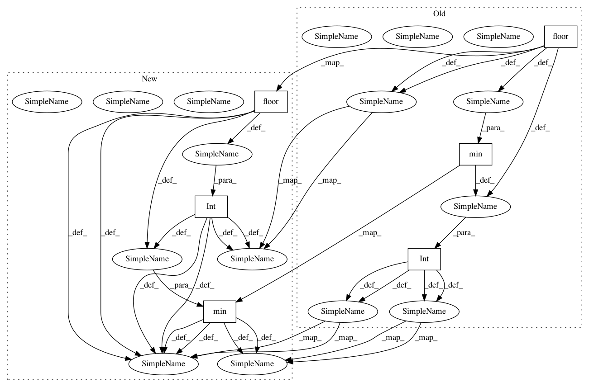

4cc818ed198714a2f77927657df9ebfe9a2af49e,chainercv/functions/ps_roi_max_align_2d.py,PSROIMaxAlign2D,forward_cpu,#PSROIMaxAlign2D#,96
Before Change
bin_size_w = 1. * roi_width / pooled_width
gh = np.floor(float(ph) * group_size / pooled_height)
gw = np.floor(float(pw) * group_size / pooled_width)
gh = int(min(max(gh, 0), group_size - 1))
gw = int(min(max(gw, 0), group_size - 1))
c = (ctop * group_size + gh) * group_size + gw
if self.sampling_ratio[0] is None:
roi_bin_grid_h = int(np.ceil(roi_height / pooled_height))
else:
roi_bin_grid_h = self.sampling_ratio[0]
if self.sampling_ratio[1] is None:
roi_bin_grid_w = int(np.ceil(roi_width / pooled_width))
else:
roi_bin_grid_w = self.sampling_ratio[1]
maxval = -1e20
maxidx = -1
for iy in six.moves.range(roi_bin_grid_h):
y = roi_start_h + ph * bin_size_h + \
(iy + .5) * bin_size_h / roi_bin_grid_h
y, y_low, y_high = _get_bounds(y, height)
if y is None or y_low is None or y_high is None:
continue
for ix in six.moves.range(roi_bin_grid_w):
x = roi_start_w + pw * bin_size_w + \
(ix + .5) * bin_size_w / roi_bin_grid_w
x, x_low, x_high = _get_bounds(x, width)
if x is None or x_low is None or x_high is None:
continue
// bilinear interpolation {{
w1, w2, w3, w4 = _get_bilinear_interp_params(
y, x, y_low, x_low, y_high, x_high)
v1 = bottom_data[roi_batch_ind, c, y_low, x_low]
v2 = bottom_data[roi_batch_ind, c, y_low, x_high]
v3 = bottom_data[roi_batch_ind, c, y_high, x_low]
v4 = bottom_data[roi_batch_ind, c, y_high, x_high]
tmpval = w1 * v1 + w2 * v2 + w3 * v3 + w4 * v4
bottom_index = iy * roi_bin_grid_w + ix
if (tmpval > maxval):
maxval = tmpval
After Change
bin_size_w = roi_width / pooled_width
gh = int(np.floor(float(ph) * group_size / pooled_height))
gw = int(np.floor(float(pw) * group_size / pooled_width))
gh = min(max(gh, 0), group_size - 1)
gw = min(max(gw, 0), group_size - 1)
c = (ctop * group_size + gh) * group_size + gw
if self.sampling_ratio[0] is None:
roi_bin_grid_h = int(np.ceil(roi_height / pooled_height))
else:
roi_bin_grid_h = self.sampling_ratio[0]
if self.sampling_ratio[1] is None:
roi_bin_grid_w = int(np.ceil(roi_width / pooled_width))
else:
roi_bin_grid_w = self.sampling_ratio[1]
maxval = -1e20
maxidx = -1
for iy in six.moves.range(roi_bin_grid_h):
y = roi_start_h + ph * bin_size_h + \
(iy + .5) * bin_size_h / roi_bin_grid_h
y, y_low, y_high = _get_bounds(y, height)
if y is None or y_low is None or y_high is None:
continue
for ix in six.moves.range(roi_bin_grid_w):
x = roi_start_w + pw * bin_size_w + \
(ix + .5) * bin_size_w / roi_bin_grid_w
x, x_low, x_high = _get_bounds(x, width)
if x is None or x_low is None or x_high is None:
continue
// bilinear interpolation {{
w1, w2, w3, w4 = _get_bilinear_interp_params(
y, x, y_low, x_low, y_high, x_high)
v1 = bottom_data[roi_batch_ind, c, y_low, x_low]
v2 = bottom_data[roi_batch_ind, c, y_low, x_high]
v3 = bottom_data[roi_batch_ind, c, y_high, x_low]
v4 = bottom_data[roi_batch_ind, c, y_high, x_high]
tmpval = w1 * v1 + w2 * v2 + w3 * v3 + w4 * v4
bottom_index = iy * roi_bin_grid_w + ix
if (tmpval > maxval):
maxval = tmpval
In pattern: SUPERPATTERN
Frequency: 4
Non-data size: 6
Instances
Project Name: chainer/chainercv
Commit Name: 4cc818ed198714a2f77927657df9ebfe9a2af49e
Time: 2019-02-18
Author: shingogo@hotmail.co.jp
File Name: chainercv/functions/ps_roi_max_align_2d.py
Class Name: PSROIMaxAlign2D
Method Name: forward_cpu
Project Name: chainer/chainercv
Commit Name: 4cc818ed198714a2f77927657df9ebfe9a2af49e
Time: 2019-02-18
Author: shingogo@hotmail.co.jp
File Name: chainercv/functions/ps_roi_max_align_2d.py
Class Name: PSROIMaxAlign2D
Method Name: backward_cpu